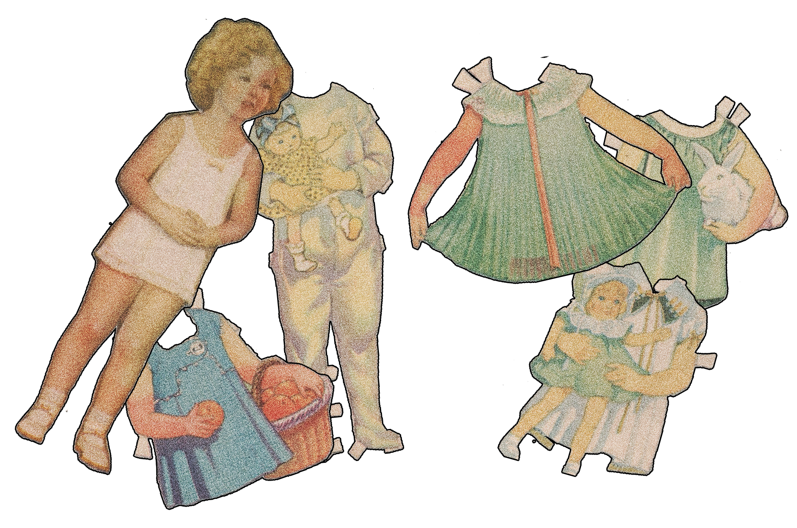

When I was young, I had a paper doll. Real old timey stuff, I think it was of Shirley Temple. I was just enamored with the doll. She didn't have many outfits but I loved to play with her all the same. Despite that, fashion isn't a huge part of my life. I like to look nice, of course, but I've got no aspirations around it. That's why I let you pick my outfit today.
